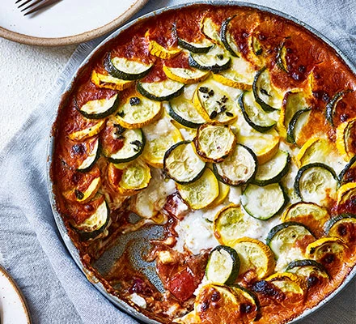

Transform ratatouille into a bake with a layer of cheese sauce and you won't look back. It makes a great late
summer dish and delivers three of your 5-a-day
- 4 tbsp olive oil
- 2 red onions, chopped
- 2 garlic cloves, finely chopped
- 2 aubergines, diced
- 2 red peppers, seeded and diced
- 1 tsp smoked paprika
- 2 tbsp balsamic vinegar
- 1 tsp soy sauce
- 500ml passata
- 200g young goat's cheese
- 4 courgettes (a mixture of green and yellow looks nice), thinly sliced
- For the cheese sauce
- 400ml milk
- 50g unsalted butter
- 50g plain flour
- 80g parmesan or vegetarian alternative, finely grated
- Heat 1 tbsp olive oil in a heavy frying pan and gently cook the red onion and garlic for 5 mins until
just starting to brown. Scatter over the aubergine and red pepper and sizzle for another 4 mins, adding
more oil if you need to. Season well and stir through the paprika, then splash in the vinegar and soy
sauce. Pour over the passata, then simmer for 5 mins until glossy and thick. Turn off the heat. Can be
made up to two days ahead and kept in the fridge.
- To make the cheese sauce, heat the milk in a heavy saucepan until simmering. In a separate pan, melt the
butter and add the flour. Stir to make a paste. Slowly whisk in the hot milk and simmer gently for 2-3
mins, stirring continually until thickened slightly. Stir in the parmesan and season.
- Tip the ratatouille into an ovenproof dish, then completely cover it with the cheese sauce. Crumble over
the goat's cheese and arrange the courgette slices on top in concentric circles, alternating between
green and yellow if you have them. Can be assembled several hours before cooking.
- Heat oven to 220C/200C fan/gas 7. Brush or drizzle the remaining oil over the courgette slices and
season with sea salt. Bake in the oven for 25-30 mins until the courgettes are cooked through and
starting to brown. Remove from the oven and allow to rest for 20 mins before serving.